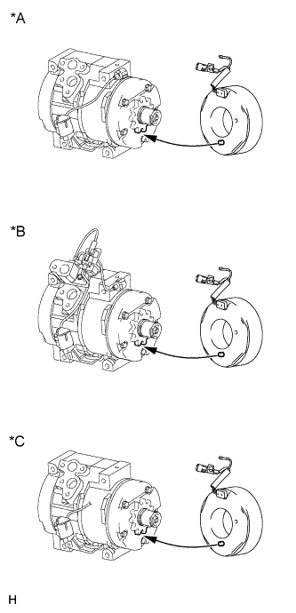
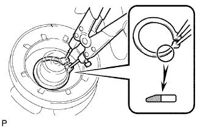
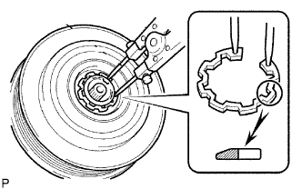
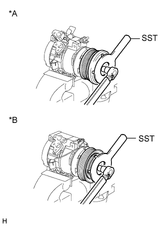

КОМПРЕССОР (для моделей с 1KD-FTV) > ПОВТОРНАЯ СБОРКА |
| 1. УСТАНОВИТЕ ЭЛЕКТРОМАГНИТНУЮ МУФТУ В СБОРЕ |
|  |
Зажмите компрессор системы кондиционирования в тисках.
Установите статор электромагнитной муфты, расположив детали, как показано на рисунке.
| *A | За исключением моделей с кодами KDJ150L-GKFEYV, KDJ150L-GKAEYV |
| *B | Для моделей с кодами KDJ150L-GKFEYV, KDJ150L-GKAEYV |
| *C | Для моделей, предназначенных для эксплуатации в холодном климате |
|  |
С помощью съемника стопорных колец установите новое пружинное стопорное кольцо скошенной стороной вверх.
Подсоедините разъем.
|  |
С помощью съемника стопорных колец установите ротор электромагнитной муфты и новое пружинное стопорное кольцо скошенной стороной вверх.
Установите шайбу электромагнитной муфты и ступицу электромагнитной муфты.
|  |
С помощью SST установите ступицу электромагнитной муфты и шайбы электромагнитной муфты и закрепите их болтом.
| *A | За исключением моделей, предназначенных для эксплуатации в холодном климате |
| *B | Для моделей, предназначенных для эксплуатации в холодном климате |
| 2. УСТАНОВИТЕ КОМПРЕССОР СИСТЕМЫ КОНДИЦИОНИРОВАНИЯ |
Установите кронштейн радиатора и закрепите его винтом.
Закрепите зажим.
| 3. ПРОВЕРЬТЕ ЗАЗОР ЭЛЕКТРОМАГНИТНОЙ МУФТЫ |
Установите на ступицу электромагнитной муфты индикатор часового типа.
| *A | За исключением моделей, предназначенных для эксплуатации в холодном климате | *B | Для моделей, предназначенных для эксплуатации в холодном климате |
| *1 | Аккумуляторная батарея | - | - |
| *a | Устройство с неподсоединенным жгутом проводов (электромагнитная муфта в сборе) | - | - |
Подсоедините положительный (+) вывод аккумуляторной батареи к контакту 3 разъема электромагнитной муфты. Включите и выключите электромагнитную муфту, подсоединяя и отсоединяя отрицательный (-) вывод аккумуляторной батареи к проводу массы, и измерьте зазор.
| 4. ОТРЕГУЛИРУЙТЕ УРОВЕНЬ КОМПРЕССОРНОГО МАСЛА |
В случае замены компрессора и электромагнитной муфты новыми постепенно выпустите газообразный хладагент через рабочий клапан и слейте указанное ниже количество масла из нового компрессора системы кондиционирования перед установкой.